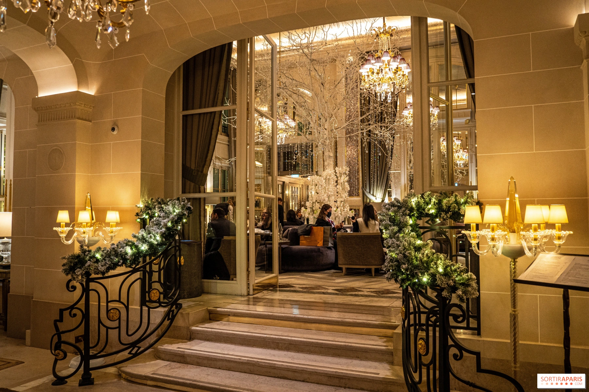

Imprimé sur papier recyclé, ne jettez pas ce journal sur la voie publique : donnez-le ou recyclez le. merci !

Paris(8e)
Des jeunes inscrits
à Pôle emploi poussent
les portes du Crillon
P.3
réforme des retraites
La mobilisation
à la française, un art
qui séduit nos voisins
P.4
télévision
Bas les masques
sur les costumes
de "Mask Singer"
P.10
voir
athènes
et mûrir
athènes
et mûrir
Vingt ans après "l'Auberge espagnole",
Cédric Klapisch revient avec "Salade grecque"
et fait le lien entre deux générationsP.8